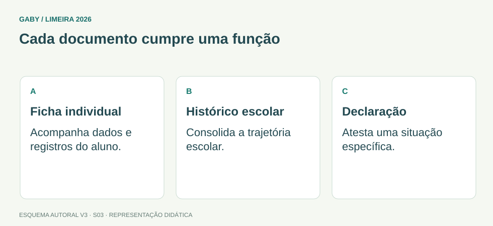

Objetivos do módulo
- Diferenciar ficha individual, histórico escolar, guia de transferência e registros de servidores.
- Identificar informações essenciais e função de cada documento.
- Aplicar conferência antes da expedição.
- Evitar inconsistências de identidade, resultados e trajetória escolar.
- Reconhecer a estrutura básica do histórico (cabeçalho, identificação, trajetória, observações, registro de publicação, certificação ou declaração e rodapé) e o que não entra nele.
- Converter carga horária de horas-aula em horas-relógio.
- Distinguir certificado, diploma, declaração e atestado, e documentos individuais de coletivos.
- Aplicar a LDB (arts. 12, I; 23, § 1º; e 24, II, III e VII) aos registros individuais, à transferência e à classificação.
Cada documento cumpre uma função

Descrição em texto do esquema
- Ficha individual: Acompanha dados e registros do aluno.
- Histórico escolar: Consolida a trajetória escolar.
- Declaração: Atesta uma situação específica.
Oficina visual · aplique o esquema
Uma família pede comprovação de matrícula atual; outra pede comprovação dos estudos já realizados. Qual documento atende a cada finalidade, em regra?
Atividade autoral complementar da V3. Registre sua resposta; a resolução está no arquivo de gabarito e revisão.
A documentação emitida deve refletir os registros que a fundamentam. Confira identificação, trajetória e informações exigidas pelo sistema de ensino.
Mapa do conteúdo
- 1. Registros individuais
- 2. Ficha individual do aluno
- 3. Histórico escolar
- 4. Guia ou documento de transferência
- 5. Ficha do funcionário e proteção de dados
- 6. Carga horária: hora-aula e hora-relógio
- 7. Observações do histórico e convalidação
- 8. Certificado, declaração e publicação de concluintes
- 9. LDB: dispositivos deste assunto
1. Registros individuais
Registros individuais concentram informações relativas a uma pessoa específica. No caso do aluno, acompanham identificação e trajetória escolar; no caso do funcionário, registram dados funcionais conforme normas da rede.
O edital cita expressamente guia de transferência, ficha individual do aluno e do funcionário e histórico escolar. Portanto, a banca pode perguntar finalidade, conteúdo e procedimentos de conferência.
Referência técnica usada nesta aula
A LDB (Lei 9.394/1996) é lei nacional e vale para a rede municipal de Limeira. Os detalhes de preenchimento (campos do histórico, termos, observações) não estão na LDB. As bancas costumam cobrá-los a partir do Manual de Procedimentos de Vida Escolar da Secretaria da Educação do Estado de São Paulo (SEDUC-SP), edição 2020.
Esse manual é referência técnica da rede estadual paulista: não obriga a rede municipal. Na escola municipal, o procedimento concreto segue o regimento escolar e as normas do sistema de ensino a que ela pertence. Use o modelo paulista para entender a função de cada registro, sem impor à rede municipal detalhes próprios do Estado, como a plataforma Secretaria Escolar Digital (SED).
Documentos de vida escolar
Documentos de vida escolar são os registros que comprovam o ingresso, a permanência e a progressão do estudante nos estudos. Exemplos:
- ficha de matrícula ou ficha cadastral: ingresso e identificação;
- ficha de registro individual: resultados do estudante ao longo do percurso;
- diário de classe: frequência, aproveitamento e conteúdo, lançados pelo professor;
- rendimento escolar individualizado e boletim;
- histórico escolar;
- certificados e diplomas de conclusão, e declarações;
- atas de resultados finais.
Não são documentos de vida escolar os registros de outros assuntos da escola: folha ponto (frequência de servidores, assunto de pessoal), controle de débitos ou cobranças, inventário, compras. Eles não comprovam estudos.
O manual paulista mostra a ligação entre esses documentos. Ao conferir a trajetória dos estudantes num processo de convalidação, o supervisor examina, entre outros, o livro de matrícula, os diários de classe, o prontuário e a ficha de registro individual do estudante, a matriz curricular e a carga horária (seção 7).
Documentos individuais e coletivos
Documento individual refere-se a um estudante determinado: registra os dados, os resultados ou a situação dele. Documento coletivo vale para a escola inteira e organiza o funcionamento ou o trabalho pedagógico.
| Tipo | Exemplos | Por quê |
|---|---|---|
| Individual | ficha cadastral, ficha individual, boletim, histórico, certificado, diploma, declaração, atestado | Cada um traz o nome de um estudante e trata da vida escolar dele. |
| Coletivo | regimento escolar, proposta pedagógica, calendário escolar | Valem para todos os estudantes e profissionais da escola. |
A proposta pedagógica é coletiva por definição legal: a LDB, art. 12, I, incumbe os estabelecimentos de ensino de elaborar e executar sua proposta pedagógica. O regimento escolar organiza a escola, e a própria LDB remete a ele regras que valem para todos, como a progressão parcial (art. 24, III) e o controle de frequência (art. 24, VI).
O certificado de conclusão de curso é individual, mesmo quando a escola expede os certificados de uma turma inteira no mesmo dia: cada um certifica a conclusão de uma pessoa.
2. Ficha individual do aluno
A ficha individual reúne informações escolares de determinado período ou trajetória, conforme modelo adotado: identificação, matrícula, componente curricular, resultados, frequência e outras ocorrências pertinentes.
Ela deve manter coerência com atas, sistemas e documentos que alimentam o histórico escolar.
No manual paulista ela se chama ficha de registro individual e aparece entre os documentos que mostram a trajetória do estudante, ao lado do livro de matrícula, dos diários de classe e do prontuário.
Ficha cadastral
No modelo paulista, a ficha cadastral é preenchida no ato da matrícula. Sua finalidade é a inscrição do estudante no quadro discente da escola. Ela contém:
- os dados pessoais do estudante, conforme a documentação civil;
- se ele veio por transferência, a identificação da escola de origem;
- no decorrer da vida escolar, o registro da trajetória, com as assinaturas do Gerente de Organização Escolar e do Diretor de Escola.
Depois do preenchimento, a ficha é impressa e assinada pelo estudante ou pelo responsável legal. Se o sistema informatizado não estiver acessível no ato da matrícula, a ficha é preenchida manualmente.
Atualização cadastral: um fato cadastral altera só o campo a que se refere. Uma mudança de endereço comprovada atualiza o endereço; não mexe em notas, anos cursados nem carga horária.
Rendimento escolar individualizado e boletim
O rendimento escolar individualizado é o registro do resultado do aproveitamento de cada estudante ao término do ano letivo: indica a situação final dele em relação ao ano ou série cursado. Com esses dados a rede calcula as taxas de aprovação, reprovação, abandono e evasão de cada escola.
Na rede estadual, o resultado é lançado na SED, transcrito no boletim escolar e permanece registrado no percurso escolar, ano a ano. Boletim e percurso são registros relacionados, mas com funções próprias: o boletim informa o resultado do período; o percurso guarda a trajetória. Entregar o boletim não dispensa o registro na trajetória, e o boletim não substitui o histórico.
Diário de classe
O diário de classe é o instrumento de lançamento e controle de frequência, aproveitamento e conteúdo lecionado em todos os dias letivos. Para saber o que foi ensinado num dia e quem esteve presente, consulta-se o diário, e não o histórico: o histórico consolida os resultados, sem os lançamentos diários.
- Frequência informa presença ou ausência.
- Aproveitamento informa o resultado de aprendizagem apurado (notas ou conceitos).
São dimensões diferentes, e uma não se deduz da outra: um aluno assíduo pode ter nota baixa, e um aluno com faltas pode ter bom aproveitamento.
No modelo paulista, o diário também traz competências e habilidades das áreas do conhecimento, para orientar o trabalho do professor e subsidiar o planejamento de ensino e o acompanhamento do estudante. O lançamento do diário é de competência e responsabilidade exclusiva do professor; a secretaria acompanha os lançamentos de notas e frequência, mas não os faz por ele.
3. Histórico escolar
O histórico escolar sintetiza a trajetória acadêmica oficial do aluno e pode ser utilizado para comprovar estudos realizados. Erros nele podem dificultar matrícula, transferência ou continuidade dos estudos.
Antes da emissão, confira identificação civil, escola, etapas/anos/séries, componentes, resultados, carga horária e observações exigidas pelas normas do sistema.
Conceito e finalidade
O manual paulista define o histórico escolar como o documento de informação e comprovação de resultados parciais e/ou finais dos estudos realizados pelo estudante, que lhe garante o prosseguimento de estudos e a possibilidade de obter outros benefícios decorrentes. Daí duas consequências:
- o histórico do ensino fundamental e do ensino médio deve fornecer todas as informações sobre a trajetória escolar (etapas, componentes, resultados, carga horária), e não uma nota global sem contexto;
- ele é diferente de uma declaração de matrícula ou de vínculo, que informa só a situação atual e não substitui a trajetória.
Quem expede, quando e quem assina
Pela LDB, art. 24, VII, cabe a cada instituição de ensino, pública ou privada, expedir históricos escolares, declarações de conclusão de série e diplomas ou certificados de conclusão de cursos. A lei atribui a expedição à própria instituição responsável pelos estudos; não a transfere ao estudante, a terceiros nem a outra escola.
No modelo paulista, o histórico é emitido em dois casos: transferência e conclusão de curso, para comprovar os estudos realizados. A escrituração é feita anualmente, só com os resultados das séries ou anos em que o estudante foi promovido; esse histórico escriturado é a base para emitir novas vias.
Quem assina: na rede estadual, a secretaria escritura o histórico sob a supervisão do Gerente de Organização Escolar, e o Diretor de Escola confere e ratifica a identidade, a regularidade e a autenticidade do documento. O campo de certificação ou declaração é do diretor, e o rodapé traz identificação, cargo e assinatura de quem de direito. Na rede municipal, quem assina é definido pelo regimento e pelas normas do sistema.
Estrutura básica do histórico
O manual paulista organiza o histórico nos blocos abaixo.
| Bloco | O que contém | Para que serve |
|---|---|---|
| Cabeçalho | brasão; identificação do governo, da secretaria, da diretoria de ensino e da unidade escolar, com o ato de criação da escola, o ato de autorização do curso, o endereço completo, telefones e e-mail | identifica a instituição emissora e a origem do documento |
| Identificação do estudante | nome completo; RG ou RNM, RA (registro do estudante gerado pelo sistema da rede estadual) e CPF; data, município, estado e país de nascimento | distingue a pessoa, inclusive de homônimos |
| Base legal e trajetória | legislação; matriz curricular; anos ou séries cursados e notas; carga horária em aulas (de 50 ou 45 minutos) e sua conversão em horas de 60 minutos | mostra o que foi estudado e com que carga |
| Estudos realizados | série ou ano cursado; ano civil; estabelecimento de ensino, município e UF | situa cada etapa no tempo e na escola em que ocorreu |
| Observações | fatos pertinentes à trajetória, com a base legal | esclarece situações especiais (seção 7) |
| Número de registro de publicação | somente para concluintes | registra a publicação da conclusão (seção 8) |
| Certificação ou declaração do diretor | “CERTIFICADO” para concluinte; “DECLARAÇÃO” na transferência | indica se o documento certifica a conclusão ou declara os estudos até a saída |
| Rodapé | data de emissão; nome completo, RG e cargo de quem assina; carimbo e assinatura | valida a expedição |
Pontos de atenção na estrutura
- Ato de criação × ato de autorização do curso. Criar a escola e autorizar um curso são atos diferentes. O manual pede que os dois constem do cabeçalho quando forem distintos. Na conferência, verifique se a autorização citada corresponde ao curso cuja escolarização o histórico comprova.
- Data de emissão × ano civil. A data de emissão (rodapé) diz quando o documento foi expedido; o ano civil (estudos realizados) diz quando cada série foi cursada. Um histórico emitido em 2026 pode comprovar séries cursadas em 2019, 2020 e 2021.
- Estabelecimento de cada etapa. Se o estudante cursou etapas em escolas diferentes, cada etapa aparece com a escola em que ocorreu. A escola que emite a via atual não “assume” as etapas cursadas em outra.
- Matriz curricular. Contextualiza os componentes e a carga horária dos estudos. A matriz de históricos e transferências recebidas é transcrita fielmente.
- O que não entra. O histórico comprova escolaridade. Parecer sobre conduta disciplinar, comportamento ou desenvolvimento socioemocional não faz parte da sua estrutura: não comprova estudos.
- Nome civil. No modelo paulista, o nome social é usado no tratamento do estudante, na lista de presença e no boletim; no histórico, nas declarações e no certificado ou diploma consta somente o nome civil.
Transcrição fiel, sem emendas nem rasuras
O manual manda transcrever fielmente as informações dos documentos escolares anteriores (nomenclatura das disciplinas, carga horária e demais observações) e determina que o histórico não contenha emendas nem rasuras. Na prática:
- não se moderniza nome de disciplina nem se recalcula nota por outro critério;
- não se inventa nem se estima resultado que não está documentado;
- documento com rasura não se conserta por cima nem “escolhendo” a nota: confere-se a fonte (ficha individual, atas, diários) e expede-se documento regular pelo procedimento competente.
Segunda via
Novas vias saem do histórico escriturado e preservado. Quando a 2ª via é gerada manualmente, o manual exige que ela seja cópia fidedigna da primeira, com a nomenclatura das disciplinas vigente à época dos estudos e com “2ª via” escrito no alto do documento. A trajetória é a mesma; mudam a indicação de via e a data de emissão, que é a da nova expedição.
4. Guia ou documento de transferência
A transferência permite continuidade da vida escolar em outra unidade. O documento precisa fornecer informações suficientes para que a escola de destino receba e posicione corretamente o aluno, conforme regras do sistema.
Prazos, formulários e documentos exatos podem variar pela rede, por isso o servidor deve observar normas locais além da legislação geral.
Histórico: o principal documento da transferência
Na transferência, a escola de destino precisa saber o que o estudante já cursou para matriculá-lo na série ou etapa adequada. Pela LDB, art. 24, II, “b”, a classificação pode ser feita por transferência, para candidatos procedentes de outras escolas. O documento que reúne os estudos comprovados (séries, componentes, carga horária e resultados) é o histórico escolar, que a escola de origem expede (art. 24, VII). O boletim, sozinho, mostra apenas o desempenho de um período.
No modelo paulista, o documento de transferência é emitido quando há mudança de unidade escolar durante o percurso e traz, no verso, a frequência e a avaliação do desempenho do estudante até a data da solicitação. Como não houve conclusão de curso, o campo do diretor usa o termo DECLARAÇÃO, e não CERTIFICADO.
A escola de destino registra a escola de origem na ficha cadastral. Se o estudante chega sem comprovante de escolaridade, a classificação pode ser feita mediante avaliação da própria escola (art. 24, II, “c”), e o procedimento é registrado nas observações do histórico (seção 7).
5. Ficha do funcionário e proteção de dados
Registros de servidores e funcionários contêm dados pessoais e funcionais. Devem ser atualizados, acessados apenas por pessoas autorizadas e conservados de forma segura.
O princípio é o mesmo: finalidade administrativa, integridade, confidencialidade e rastreabilidade.
6. Carga horária: hora-aula e hora-relógio
O documento de origem costuma registrar a carga em aulas (horas-aula), cuja duração varia: aulas de 45 ou de 50 minutos são comuns. A hora-relógio tem 60 minutos. O modelo paulista pede que o histórico informe as aulas e a sua conversão em horas de 60 minutos. Registrar os dois dados (número e duração das aulas, e o total em horas) mantém a conversão conferível.
Como converter
- Multiplique o número de aulas pela duração de cada aula, em minutos: o resultado é o tempo total em minutos.
- Divida o total de minutos por 60: o quociente inteiro é o número de horas.
- Se a divisão deixar resto, o resto é o número de minutos além das horas inteiras.
Fórmula: horas-relógio = aulas × minutos por aula ÷ 60.
| Aulas | Duração | Total em minutos | Horas-relógio |
|---|---|---|---|
| 120 | 50 min | 120 × 50 = 6.000 | 6.000 ÷ 60 = 100 h |
| 160 | 45 min | 160 × 45 = 7.200 | 7.200 ÷ 60 = 120 h |
| 200 | 50 min | 200 × 50 = 10.000 | 166 h 40 min (166 × 60 = 9.960; sobram 40 min) |
| 70 | 50 min | 70 × 50 = 3.500 | 58 h 20 min (58 × 60 = 3.480; sobram 20 min) |
7. Observações do histórico e convalidação
O campo de observações serve para esclarecer fatos pertinentes à trajetória escolar do estudante, sempre com a citação da base legal. Não é espaço para comentários pessoais, sobre a família ou sobre comportamento. No modelo paulista, quando a situação exige explicação, escreve-se “VIDE OBSERVAÇÃO” no campo das notas daquele ano e a explicação no campo de observações.
Situações que pedem observação
| Situação | O que a observação registra | Fundamento |
|---|---|---|
| Classificação sem comprovante de escolaridade anterior | a série ou ano em que o estudante foi classificado mediante avaliação feita pela escola. Não se inventam notas de anos anteriores que não foram comprovados. | LDB, art. 24, II, “c”, e regimento escolar |
| Equivalência de estudos (por exemplo, feitos no exterior) | escola, cidade e país em que o estudante estudou, a série ou ano a que esses estudos correspondem e a norma do procedimento | normas do sistema de ensino e regimento escolar |
| Reclassificação | a série ou ano de origem, a série ou ano de destino e a avaliação de competência que fundamentou a mudança | LDB, art. 23, § 1º, e normas do sistema |
| Progressão parcial | na promoção com pendência: a nota que causou a retenção, marcada com asterisco, e os componentes pendentes. Quando a pendência é cumprida: o ano em que foi cumprida, os componentes e as notas obtidas. | LDB, art. 24, III, e regimento escolar |
| Escala de avaliação | o critério de notas usado no período | regimento e normas do sistema |
A escala importa porque a mesma nota muda de sentido conforme o critério. O manual traz como exemplo a escala da rede estadual a partir de 2007: notas de 0 a 10, com 5 como patamar de desempenho satisfatório. Nessa escala um 6 é satisfatório; numa escala de 0 a 100 com mínimo 50, não seria. Informar a escala permite interpretar o resultado; não autoriza converter notas antigas para outra escala.
Convalidação e regularização de vida escolar
O manual paulista, citando súmulas do Conselho Estadual de Educação de São Paulo (referência da rede estadual), distingue:
- Regularização de vida escolar: para vício intrínseco ao processo de ensino, como estudante matriculado em série indevida ou que recebeu indevidamente certificado ou diploma.
- Convalidação de estudos: para vício extrínseco, isto é, a falta de um ato que deveria anteceder o ensino, como a autorização de funcionamento da escola ou do curso. Ela só é possível depois que o vício é removido por ato publicado; convalida-se o período que vai do início do vício até o dia anterior à publicação.
Feita a convalidação, a averbação consta de três documentos de cada estudante:
- histórico escolar, no campo de observação;
- ficha de registro individual;
- ata de resultados finais.
Juntar cópia da portaria de convalidação ao prontuário do estudante é providência adicional: não substitui essas averbações.
8. Certificado, declaração e publicação de concluintes
O que cada documento comprova
| Documento | O que comprova | Quando é expedido |
|---|---|---|
| Histórico escolar | a trajetória e os resultados dos estudos | na transferência e na conclusão de curso |
| Certificado ou diploma de conclusão de curso | que o estudante concluiu o curso | na conclusão (LDB, art. 24, VII) |
| Declaração de conclusão de série | que o estudante concluiu determinada série | ao fim da série (LDB, art. 24, VII) |
| Declaração ou atestado de matrícula, frequência ou escolaridade | uma situação momentânea: que o estudante está matriculado ou frequenta determinada série | a pedido, para uma finalidade específica |
O que define o documento é o seu objeto, isto é, aquilo que ele efetivamente atesta. Uma declaração de vínculo comprova a situação daquele momento, não a trajetória nem a conclusão; por isso não substitui o histórico quando se pede comprovação de estudos.
No campo do diretor do histórico paulista: estudante concluinte recebe o termo CERTIFICADO; na transferência, usa-se DECLARAÇÃO. Transferir-se não é concluir o curso: o documento declara os estudos feitos até a saída.
Conclusão de curso e registro de publicação
Na rede estadual paulista, a conclusão de curso é publicada. A secretaria da escola prepara a documentação e os dados para a publicação de registro de concluintes na SED, e o Diretor de Escola ratifica os históricos no prontuário e na plataforma para fins de publicação.
O número de registro de publicação é um campo do histórico usado somente para estudantes concluintes do ensino fundamental (regular ou EJA), do ensino médio (regular ou EJA) ou do ensino técnico. Não existe para quem se transfere no meio do curso e não é numeração de atendimentos da secretaria.
A publicação dá registro oficial à conclusão, e o manual a usa como prova. Exemplo: para chancelar o histórico ou o diploma de quem vai estudar no exterior (fora do Mercosul, que tem carimbo próprio), o interessado envia o documento original com a cópia da publicação de registro de concluinte (formados após 2001) ou do Diário Oficial (formados entre 1980 e 2001).
Essa publicação é prática da rede estadual paulista. Na rede municipal, a forma de registrar e dar publicidade aos concluintes segue as normas do sistema de ensino a que a escola pertence.
9. LDB: dispositivos deste assunto
A LDB (Lei 9.394/1996) é lei federal de alcance nacional: vale para escolas públicas e privadas de todos os sistemas, inclusive a rede municipal de Limeira. Os dispositivos abaixo foram conferidos no texto compilado do Planalto; nenhum deles teve a redação alterada.
| Dispositivo | O que determina | Como cai |
|---|---|---|
| Art. 12, I | Os estabelecimentos de ensino, respeitadas as normas comuns e as do seu sistema, elaboram e executam sua proposta pedagógica. | Proposta pedagógica é documento coletivo da escola. |
| Art. 23, § 1º | A escola pode reclassificar os alunos, inclusive em transferências entre estabelecimentos do País e do exterior, com base nas normas curriculares gerais. | Observação de reclassificação no histórico. |
| Art. 24, II, “a” | Classificação por promoção, para quem cursou com aproveitamento a série ou fase anterior na própria escola. | Caso comum: o aluno segue na mesma escola. |
| Art. 24, II, “b” | Classificação por transferência, para candidatos procedentes de outras escolas. | O histórico é o principal documento da transferência. |
| Art. 24, II, “c” | Classificação independentemente de escolarização anterior, mediante avaliação feita pela escola, conforme regulamentação do sistema de ensino. | Classificação sem comprovante; registro nas observações. |
| Art. 24, III | Nas escolas com progressão regular por série, o regimento pode admitir progressão parcial, preservada a sequência do currículo. | Observação de progressão parcial no histórico. |
| Art. 24, VII | Cada instituição de ensino expede históricos escolares, declarações de conclusão de série e diplomas ou certificados de conclusão de cursos, com as especificações cabíveis. | Quem expede: a instituição, pública ou privada. |
O inciso II vale para qualquer série ou etapa, exceto a primeira do ensino fundamental.
Exemplos resolvidos passo a passo
Exemplo 1
Situação: Histórico apresenta sobrenome diferente do documento de identificação.
Exemplo 2
Situação: Aluno solicita transferência durante o período letivo.
Exemplo 3
Situação: Pessoa sem relação com a escola pede dados funcionais completos de um servidor.
Exemplo 4
Situação: O documento de origem registra, para Ciências, 150 aulas de 50 minutos. Quantas horas-relógio devem constar?
Exemplo 5
Situação: Um ex-aluno pede nova via manual do histórico. Na época, um componente se chamava “Educação Artística”; hoje a escola usa “Arte”.
Exemplo 6
Situação: Em junho, uma estudante do 7º ano muda de cidade e pede transferência.
Exemplo 7
Situação: Classifique como individual ou coletivo: calendário escolar, ficha cadastral, regimento escolar e declaração de matrícula.
Pegadinhas e erros frequentes
- Confundir ficha individual com histórico escolar.
- Expedir documento sem conferir identificação.
- Imaginar que transferência “apaga” registros da escola de origem.
- Divulgar dados funcionais sem necessidade/autorização.
- Usar modelos antigos sem verificar normas atuais.
- Dizer que só escola pública expede histórico: a LDB (art. 24, VII) atribui a expedição a cada instituição de ensino.
- Contar cada hora-aula como uma hora-relógio.
- Usar CERTIFICADO na transferência: o termo do modelo paulista é DECLARAÇÃO.
- Atualizar nomes de disciplinas na 2ª via ou omitir a indicação “2ª via”.
- Confundir data de emissão com o ano civil em que a série foi cursada.
- Incluir parecer de conduta ou de comportamento entre os itens do histórico.
- Inventar notas de anos não comprovados ao registrar classificação sem documentação.
- Achar que o número de registro de publicação vale para estudantes transferidos.
- Classificar proposta pedagógica ou regimento como documento individual, ou certificado como coletivo.
- Tratar folha ponto ou controle de débitos como documento de vida escolar.
- Tratar o manual paulista como lei para a rede municipal.
Resumo de prova
- Ficha individual registra dados do aluno conforme período/modelo da rede.
- Histórico comprova trajetória escolar oficial.
- Transferência deve preservar continuidade dos estudos.
- Registros do funcionário também exigem integridade e sigilo.
- Todo documento expedido deve ser conferido.
- LDB, art. 24, VII: cada instituição de ensino expede históricos, declarações de conclusão de série e diplomas ou certificados.
- Histórico: emitido na transferência e na conclusão; estrutura com cabeçalho (atos de criação e de autorização), identificação (nome, RG/RNM, RA, CPF, nascimento), trajetória, estudos realizados (ano civil e estabelecimento), observações, registro de publicação, certificação ou declaração e rodapé.
- Transcrição fiel, sem emendas nem rasuras; 2ª via é cópia fidedigna, com a nomenclatura da época e “2ª via” no alto.
- Horas-relógio = aulas × minutos ÷ 60.
- Observações esclarecem a trajetória com base legal: classificação, reclassificação, equivalência, progressão parcial, escala de avaliação.
- Convalidação: averbação no histórico, na ficha de registro individual e na ata de resultados finais.
- Concluinte: CERTIFICADO e número de registro de publicação; transferência: DECLARAÇÃO.
- Ficha cadastral inscreve o estudante no quadro discente; diário de classe registra frequência, aproveitamento e conteúdo; rendimento individualizado dá a situação final do ano.
- Individuais: ficha, boletim, histórico, certificado, diploma, declaração, atestado. Coletivos: regimento, proposta pedagógica (LDB, art. 12, I).
- Manual da SEDUC-SP: referência técnica da rede estadual; na rede municipal, valem o regimento e as normas do sistema.
Exercícios do módulo
Resolva sem consultar o arquivo de gabarito. As questões são autorais e construídas para treinar os conceitos do edital.
- registrar somente recados
- funcionar como agenda
- comprovar a trajetória escolar do aluno
- substituir documento de identidade
- consultar somente o aluno
- conferir identificação e registros escolares
- apenas imprimir o que o sistema mostrar sem revisão
- retirar informações divergentes sem apuração
- preservar a continuidade da vida escolar
- eliminar registros anteriores
- ser feita sem documentação
- impedir matrícula futura
- é sempre idêntica ao histórico em função e conteúdo
- serve somente para funcionários
- não pode conter resultados
- reúne informações escolares individualizadas
- podem ser enviados a qualquer solicitante
- não exigem segurança
- devem ser protegidos e acessados conforme necessidade e autorização
- são sempre públicos em sua totalidade
- alterar sem registro
- verificar fonte oficial e regularizar
- escolher a grafia mais curta
- ignorar
- mantém seus registros conforme normas de arquivo
- deve destruir tudo imediatamente
- não precisa registrar a saída
- pode alterar notas livremente
- ser irrelevante
- ser corrigido verbalmente
- ser substituído por um recado
- prejudicar continuidade dos estudos e exigir retificação
- ponto do servidor
- inventário patrimonial
- mudança de unidade escolar
- controle de estoque
- copiar sem verificar
- comparar informações em fontes relacionadas
- ler apenas um campo
- usar memória
Quando terminar, abra Secretário de Escola 03 - Registros Individuais, Ficha e Histórico Escolar - Gabarito e Revisão.
Checklist de domínio
- ☐ Diferenciar ficha individual, histórico escolar, guia de transferência e registros de servidores.
- ☐ Identificar informações essenciais e função de cada documento.
- ☐ Aplicar conferência antes da expedição.
- ☐ Evitar inconsistências de identidade, resultados e trajetória escolar.
- ☐ Listar os blocos do histórico e dizer o que não entra nele.
- ☐ Converter horas-aula em horas-relógio, com resto em minutos.
- ☐ Explicar como se faz a 2ª via e por que o histórico não pode ter rasuras.
- ☐ Dizer o que registrar nas observações em classificação, reclassificação, equivalência, progressão parcial e convalidação.
- ☐ Distinguir certificado, diploma, declaração e atestado, e saber quando há número de registro de publicação.
- ☐ Classificar documentos em individuais e coletivos.
- ☐ Citar e explicar os arts. 12, I; 23, § 1º; e 24, II, III e VII da LDB.
Meta do módulo: 80% ou mais nas questões, sem depender de consulta.
Referências e conteúdos auxiliares
- Brasil — Lei 9.394/1996, LDB, texto compiladoOrganização da educação, incumbências escolares, avaliação, frequência e documentação. Nesta edição, conferidos no texto compilado: art. 12, I; art. 23, § 1º; art. 24, II (alíneas “a” a “c”), III, VI e VII, sem alteração de redação. Conferido em 18/11/2026.
- SEDUC-SP — Manual de Procedimentos de Vida Escolar, 2020 (PDF)Referência técnica da rede estadual paulista, não norma municipal. Conferidos: atribuições da direção e da secretaria (p. 9–10), ficha cadastral (p. 13), rendimento individualizado, diário de classe e chancela (p. 15–16), nome social (p. 16), convalidação e averbação (p. 89–90), conceito, emissão, 2ª via e transcrição fiel do histórico (p. 100), estrutura básica, observações, registro de publicação, certificado × declaração e rodapé (p. 101–104), atos de criação e de autorização (p. 105). Conferido em 18/11/2026.
- SEDUC-SP — Seção de Vida Escolar (SEVESC), Unidade Regional de Ensino Leste 4: página oficial que publica o Manual de Procedimentos de Vida Escolar 2020Página do portal educacao.sp.gov.br com o link “Manual de Procedimentos de Vida Escolar 2020”; o arquivo publicado tem o mesmo texto do PDF acima. Conferido em 18/11/2026.
- Conarq — Criação e desenvolvimento de arquivos públicos municipaisConsulte especialmente gestão de documentos, protocolo, classificação, avaliação e destinação.
Referências externas de apoio consultadas para a V3 em 27/09/2026. A origem das questões é o material autoral do projeto; estes links não indicam que uma instituição publicou ou validou os exercícios. As páginas externas precisam de internet. Em informática, confira a versão do programa; em legislação, observe o recorte e as regras de atualização do edital.